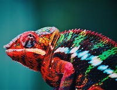
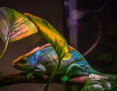
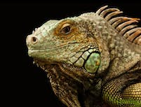
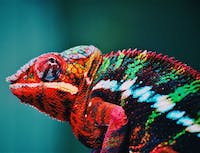
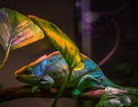
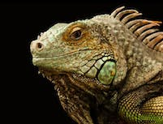

Watch out! Green Sturgmar Zoo has some of the speediest Computer Supporters this side of the Menominee River. These creatures always are ready for a challenge and never give in to their fiercest obstacles. Fearless, I say.
Species on Exhibit Today
 




